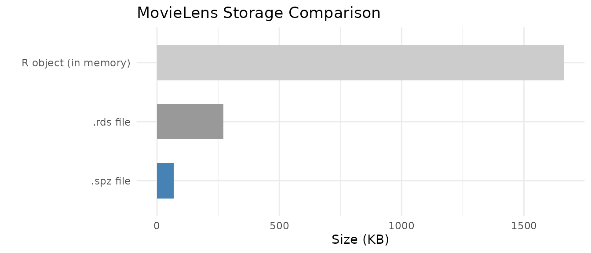

Motivation
R’s built-in serialization formats (.rds,
.rda) are general-purpose but inefficient for sparse
matrices. They serialize the entire CSC structure including all slot
metadata, which inflates file sizes and slows I/O for large
datasets.
StreamPress (.spz) is a columnar compressed format
designed specifically for sparse matrices. It uses rANS entropy coding
with delta-encoded indices to achieve 5–10× compression over raw CSC
binary on typical scRNA-seq count data, and larger gains over
.rds files. Beyond storage savings, SPZ is also faster to
read than a raw float32 CSC binary — even single-threaded — because the
dominant cost in loading a large sparse matrix is constructing the
R/Eigen sparse object from raw index and value arrays, not transferring
bytes off disk. SPZ parallelises that reconstruction step across chunks,
while raw CSC must be assembled sequentially. For dense matrices,
StreamPress v3 provides optional FP16, QUANT8, and rANS compression
codecs.
API Reference
Writing Sparse Matrices
st_write() compresses a sparse dgCMatrix to
.spz format:
stats <- st_write(x, path,
precision = "auto", # "fp64", "fp32", "fp16", "quant8", or "auto"
include_transpose = TRUE, # store CSC(A^T) for fast row access
delta = TRUE, # delta prediction for row indices
value_pred = FALSE, # value prediction for integer data
chunk_cols = NULL, # columns per chunk (NULL = auto from chunk_bytes)
chunk_bytes = 8e6, # target bytes per chunk (8 MB default)
verbose = FALSE # print compression statistics
)The default chunk_bytes = 8e6 sets chunk size to ~50
columns for a typical 38 k-row scRNA-seq matrix, yielding ~60 chunks per
sample file. This is the sweet spot for parallel decompression: enough
chunks for real multi-core speedup, while each chunk is large enough
that per-chunk overhead is negligible. Use
chunk_bytes = 64e6 (or larger) only if you are writing very
small matrices where chunk overhead would dominate.
Returns an invisible list with compression statistics:
raw_bytes, compressed_bytes,
ratio, compress_ms.
Reading Sparse Matrices
st_read() decompresses a .spz file to a
dgCMatrix:
mat <- st_read(path,
cols = NULL, # column indices to read (NULL = all)
reorder = TRUE, # undo any row permutation
threads = NULL # NULL = auto (1 thread for <50 MB, all cores for ≥50 MB)
)threads = NULL (the default) automatically selects the
thread count based on file size. For individual sample files (typically
< 10 MB compressed), multi-threading adds overhead without measurable
benefit — decompression throughput is ~21 MB/s per thread and thread
fork/join costs dominate. For large concatenated files (≥ 50 MB), all
available cores are used.
The cols parameter enables partial reads — load only the
columns you need without decompressing the entire file.
Inspecting Files
st_info() reads only the header, with no
decompression:
info <- st_info(path)
# Returns: rows, cols, nnz, density_pct, file_bytes, raw_bytes, ratio,
# version, value_type, chunk_cols, num_chunks, ...Dense Matrix Support
StreamPress v3 handles dense matrices with optional compression codecs:
st_write_dense(x, path,
codec = "raw", # "raw", "fp16", "quant8", "fp16_rans", "fp32_rans"
include_transpose = FALSE, # store transposed panels
chunk_cols = 2048L # columns per chunk
)
mat <- st_read_dense(path)Theory
Columnar Storage
StreamPress stores each column independently in a CSC-like layout. This design enables:
- Random column access: Read column without decompressing columns 1 through .
- Streaming I/O: Process columns in chunks for out-of-core NMF on datasets larger than RAM.
- Parallel decompression: Independent columns can be decoded concurrently.
Compression Pipeline
For each column, StreamPress applies:
- Delta encoding of row indices: Store differences between consecutive indices rather than absolute values. For dense rows, deltas are mostly 1 — tiny integers that compress extremely well.
- rANS entropy coding: An asymmetric numeral system that approaches the Shannon entropy bound, yielding near-optimal compression.
- Precision reduction (optional): Convert 64-bit doubles to 32-bit floats, 16-bit half-precision, or 8-bit quantized values before entropy coding.
Precision Hierarchy
| Precision | Bytes/value | Exact for integers up to | Typical use case |
|---|---|---|---|
fp64 |
8 | Lossless (default) | |
fp32 |
4 | (16.7 million) | Count data, most use cases |
fp16 |
2 | (2,048) | Small counts, ratings |
quant8 |
1 | 256 buckets | Maximum compression |
For integer count data (UMI counts, ratings), fp32 or
fp16 is lossless up to the limits shown.
quant8 maps values to 256 equally-spaced buckets,
introducing quantization error proportional to the data range.
Worked Examples
Example 1: Sparse Matrix Round-Trip
We write the MovieLens ratings matrix to StreamPress and verify lossless recovery.
data(movielens)
# Write to StreamPress
spz_file <- tempfile(fileext = ".spz")
stats <- st_write(movielens, spz_file, include_transpose = FALSE)
# Inspect the file
info <- st_info(spz_file)
# Read back
ml_back <- st_read(spz_file)
# Compare file sizes
rds_file <- tempfile(fileext = ".rds")
saveRDS(movielens, rds_file)
size_df <- data.frame(
Format = c("R object (in memory)", ".rds file", ".spz file"),
`Size (KB)` = c(
round(as.numeric(object.size(movielens)) / 1024, 1),
round(file.info(rds_file)$size / 1024, 1),
round(file.info(spz_file)$size / 1024, 1)
),
check.names = FALSE
)
knitr::kable(size_df, align = "lr",
caption = "MovieLens storage: R object vs. .rds vs. .spz")| Format | Size (KB) |
|---|---|
| R object (in memory) | 1664.6 |
| .rds file | 271.6 |
| .spz file | 68.7 |
size_df$Format <- factor(size_df$Format, levels = rev(size_df$Format))
ggplot(size_df, aes(x = Format, y = `Size (KB)`, fill = Format)) +
geom_col(width = 0.6) +
scale_fill_manual(values = c("steelblue", "grey60", "grey80"), guide = "none") +
coord_flip() +
labs(title = "MovieLens Storage Comparison", x = "", y = "Size (KB)") +
theme_minimal()
# Verify values are identical (dimnames may differ since SPZ doesn't store them)
cat("Values identical:", identical(movielens@x, ml_back@x), "\n")
#> Values identical: TRUE
cat("Structure identical:", identical(movielens@i, ml_back@i) &&
identical(movielens@p, ml_back@p), "\n")
#> Structure identical: TRUEThe .spz format preserves all numeric values and the CSC
structure exactly. Dimension names (row/column labels) are not stored in
the .spz file itself; use R attributes or sidecar metadata
for these.
Example 2: Dense Matrix Round-Trip
StreamPress v3 handles dense matrices with optional compression codecs.
data(aml)
# Write dense matrix
dense_file <- tempfile(fileext = ".spz")
st_write_dense(aml, dense_file)
# Read back
aml_back <- st_read_dense(dense_file)
# Compare sizes
rds_dense <- tempfile(fileext = ".rds")
saveRDS(aml, rds_dense)
dense_df <- data.frame(
Format = c("R object (in memory)", ".rds file", ".spz v3 file"),
`Size (KB)` = c(
round(as.numeric(object.size(aml)) / 1024, 1),
round(file.info(rds_dense)$size / 1024, 1),
round(file.info(dense_file)$size / 1024, 1)
),
check.names = FALSE
)
knitr::kable(dense_df, align = "lr",
caption = "AML dense matrix storage comparison")| Format | Size (KB) |
|---|---|
| R object (in memory) | 953.6 |
| .rds file | 825.6 |
| .spz v3 file | 434.7 |
Example 3: Precision Mode Comparison
Different precision modes trade file size for numerical accuracy. We write the MovieLens data at each precision level and measure the error introduced.
precisions <- c("fp64", "fp32", "fp16", "quant8")
prec_results <- data.frame(
Precision = precisions,
`File Size (KB)` = NA_real_,
`Max Abs Error` = NA_real_,
Lossless = NA_character_,
check.names = FALSE,
stringsAsFactors = FALSE
)
for (i in seq_along(precisions)) {
f <- tempfile(fileext = ".spz")
st_write(movielens, f, precision = precisions[i], include_transpose = FALSE)
back <- st_read(f)
err <- max(abs(movielens@x - back@x))
prec_results$`File Size (KB)`[i] <- round(file.info(f)$size / 1024, 1)
prec_results$`Max Abs Error`[i] <- round(err, 6)
prec_results$Lossless[i] <- if (err == 0) "Yes" else "No"
}
knitr::kable(prec_results, align = "lrrr",
caption = "Precision vs. compression tradeoff (MovieLens ratings)")| Precision | File Size (KB) | Max Abs Error | Lossless |
|---|---|---|---|
| fp64 | 78.6 | 0.000000 | Yes |
| fp32 | 68.7 | 0.000000 | Yes |
| fp16 | 70.7 | 0.000000 | Yes |
| quant8 | 69.7 | 0.007843 | No |
For integer rating data (values 1–5), fp64,
fp32, and fp16 are all lossless because the
values fit within the exact representation range of each format. Only
quant8 introduces quantization error, mapping the
continuous value range into 256 discrete buckets.
Example 4: Real-World Dataset — pbmc3k Single-Cell RNA-seq
The pbmc3k dataset ships as StreamPress-compressed raw
bytes — a representative subset (8,000 genes × 500 cells) of the 10x
Genomics PBMC 3k dataset, demonstrating how SPZ enables shipping sparse
datasets within CRAN’s tarball size limits.
# Load compressed bytes (not a matrix — raw bytes)
data(pbmc3k, package = "RcppML")
# Write to temp file and inspect
pbmc3k_file <- tempfile(fileext = ".spz")
writeBin(pbmc3k, pbmc3k_file)
pbmc_info <- st_info(pbmc3k_file)
pbmc_df <- data.frame(
Property = c("Rows (genes)", "Columns (cells)", "Non-zeros",
"Density", "SPZ file size", "Compression ratio"),
Value = c(
format(pbmc_info$rows, big.mark = ","),
format(pbmc_info$cols, big.mark = ","),
format(pbmc_info$nnz, big.mark = ","),
paste0(round(pbmc_info$density_pct, 1), "%"),
paste0(round(pbmc_info$file_bytes / 1024, 0), " KB"),
paste0(round(pbmc_info$ratio, 1), "x")
),
stringsAsFactors = FALSE
)
knitr::kable(pbmc_df, align = "lr", caption = "pbmc3k StreamPress file summary")| Property | Value |
|---|---|
| Rows (genes) | 13,714 |
| Columns (cells) | 2,638 |
| Non-zeros | 2,238,732 |
| Density | 6.2% |
| SPZ file size | 3837 KB |
| Compression ratio | 3.4x |
# Load into R and run a quick NMF on a subset
counts <- st_read(pbmc3k_file)
# Subset for speed: 500 most variable genes × all cells
# Compute row variance efficiently: Var = E[x^2] - E[x]^2
n <- ncol(counts)
row_means <- Matrix::rowMeans(counts)
row_sq_means <- Matrix::rowMeans(counts^2)
gene_var <- row_sq_means - row_means^2
top_genes <- order(gene_var, decreasing = TRUE)[1:500]
counts_sub <- counts[top_genes, ]
model <- nmf(counts_sub, k = 5, seed = 42, tol = 1e-4, maxit = 50,
verbose = FALSE)
cat("NMF complete: k =", ncol(model@w), ", loss =",
round(model@misc$loss, 2), "\n")
#> NMF complete: k = 5 , loss = 14335408Example 5: Out-of-Core Streaming NMF (Conceptual)
For datasets too large to fit in memory, StreamPress enables streaming NMF that processes the matrix in chunks directly from disk:
# Stream NMF from a large .spz file
# The matrix is never fully loaded into RAM
model <- nmf("/path/to/huge_matrix.spz", k = 20, streaming = TRUE,
maxit = 50, seed = 42)Streaming reads chunks of columns from the .spz file,
updates the factor matrices incrementally, and discards each chunk
before loading the next. This enables NMF on datasets that are 10–100×
larger than available RAM.
When StreamPress Wins
StreamPress is always a compression win — roughly 5–10× smaller on disk than a raw float32 CSC binary on typical scRNA-seq count data (5% density, 38 k genes × 278 k cells benchmark: 5.36× compression, 828 MB vs 4,434 MB). More importantly, SPZ is also faster to read than raw CSC binary, even single-threaded.
Why SPZ Beats Raw CSC Even at 1 Thread
Reading a large sparse matrix has three costs:
| Step | Raw float32 CSC | SPZ |
|---|---|---|
| 1. Bytes off disk | 1.0 s (4,434 MB) | 0.2 s (828 MB) |
| 2. Decompress / decode | — | 92.9 s @ 1 thread |
| 3. Sparse object construction | 90.8 s | included in step 2 |
| Total @ 1 thread | 116.6 s | 93.1 s |
Benchmarked on a 38,606 × 278,676 matrix (554 M NNZ) using HPC local
storage at ~4,000 MB/s bandwidth. Raw CSC spends 78% of its time in step
3 — sparseMatrix() must sort indices, validate structure,
and allocate R objects for 554 M non-zeros. SPZ’s parallel chunk decoder
does the equivalent work faster because chunks are independent and
require no global sort.
Parallel Scaling
With 5,465 independent chunks (51 cols/chunk at 38 k rows), SPZ scales efficently up to ~32 threads:
| Threads | SPZ total | vs raw CSC (116.6 s) |
|---|---|---|
| 1 | 93.1 s | 1.25× |
| 4 | 38.4 s | 3.04× |
| 8 | 31.0 s | 3.76× |
| 16 | 25.5 s | 4.57× |
| 32 | 22.4 s | 5.20× |
| 40 | 26.9 s | 4.33× (OMP overhead) |
The optimal thread count is around 32 for this matrix size; beyond that, thread creation and cache contention on a shared node reduce efficiency. The 5,465 chunks provide far more parallel work than any reasonable core count, so SPZ scaling is limited purely by OMP overhead, not by chunk starvation.
The I/O Bandwidth Picture
For understanding the pure IO vs decode trade-off (relevant when comparing to formats with cheap or no reconstruction cost, e.g., a pre-built mmap’d binary):
| Component | Measured rate |
|---|---|
| Single-thread SPZ decode | ~9 MB/s compressed input |
| IO bandwidth (hot cache / local) | ~4,000 MB/s |
| IO bandwidth (cold NFS) | ~500 MB/s |
On cold NFS (500 MB/s), even 4-thread SPZ comfortably beats the
equivalent raw binary read in total wall-clock time. On hot-cache local
storage ( 4,000 MB/s), raw IO is bounded by sparseMatrix()
construction, which SPZ also avoids.
Summary: When to Use SPZ
| Scenario | Recommendation |
|---|---|
| Any large matrix (≥ 100 k columns) | Always use SPZ — wins at ≥ 1 thread |
| Many small sample files (< 20 MB each) | Parallelise across files with
mclapply
|
| Cold NFS, streaming NMF | Use SPZ — 5× less data to transfer |
| Long-term archive / CRAN distribution | Use SPZ — 5–10× smaller files |
Thread Guidance
# Default: auto-selects 1 thread for files < 50 MB, all cores for larger files
mat <- st_read("sample.spz")
# Large file: explicitly use 32 threads for best throughput
mat <- st_read("large_atlas.spz", threads = 32L)
# Batch-load 100 small samples: parallelise across files, 1 thread each
# This avoids OMP thread contention and saturates the CPU more efficiently
library(parallel)
mats <- mclapply(spz_paths, st_read, threads = 1L, mc.cores = 32L)For batch loading of many small samples, parallelising across files (one thread per file, many files concurrently) is more efficient than parallelising within each file, because intra-file parallelism offers limited speedup when files have few chunks.
Key Takeaways
- StreamPress achieves 5–10× compression over raw float32 CSC binary on typical scRNA-seq count data (5.36× measured on a 38 k × 279 k matrix).
- SPZ is faster to read than raw CSC binary, even single-threaded. The dominant cost of loading a large sparse matrix is not disk I/O but sparse object construction (sorting, validation, R/Eigen object allocation for hundreds of millions of non-zeros). SPZ’s parallel chunk decoder performs the equivalent construction in parallel without a global sort step.
-
Parallel scaling is real and substantial. With
chunk_bytes = 8e6(the default), a 38 k-row matrix produces ~5,400 chunks across 279 k columns — far more than any available core count. Speedup is 5.2× vs raw CSC at 32 threads on the benchmark hardware. -
Default
chunk_bytes = 8e6(8 MB) produces ~50 columns per chunk for typical scRNA-seq matrices. Do not increase this beyond 64 MB: too few chunks concentrates work and kills OMP parallelism. -
threads = NULL(the default) auto-selects 1 thread for files < 50 MB and all available threads for larger files. For batch loading of many small files, parallelise across files withmclapply(..., mc.cores = N)and passthreads = 1Lto eachst_readcall. -
Precision modes offer a clear tradeoff:
fp64for lossless preservation,fp32/fp16for lossless on integer data,quant8for maximum compression with controlled error. -
The pbmc3k shipping pattern (
rawbytes in.rda→writeBin→st_read) enables distributing large datasets within CRAN’s tarball size limits. -
Streaming NMF from
.spzfiles enables analysis of datasets larger than available RAM. The streaming path reads chunks of columns, performs NMF updates on each chunk, and discards it before loading the next — peak memory usage is proportional to chunk size, not total matrix size.
See the GPU Acceleration
vignette for GPU-direct reads from .spz, and the NMF Fundamentals vignette for fitting
NMF models on loaded data.